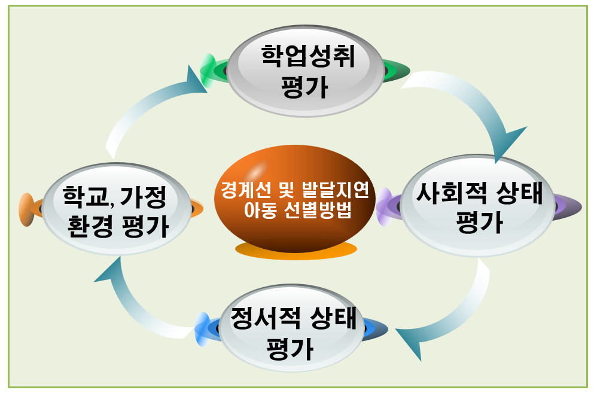

1. 경계선 및 발달지연 선별 방법
경계선 및 발달지연 아동을 선별하기 위해서는 다각적인 평가가 필요하다.

1) 중요한 요소는 학업 성취 평가이다
-표준화된 학력 평가 도구(WISC, K-ABC 등)를 활용하여 아동의 지능과 학습 능력을 평가하며, 이 과정에서 학습 속도, 이해력, 기억력 등의 기초 학습 능력을 점검한다(박지훈, 2020).
-아동의 발달 수준을 명확히 파악하고, 학습에서의 어려움을 구체적으로 이해할 수 있다.
-학업 성취 평가는 경계선 및 발달지연 아동의 학습 성취도와 그들이 필요로 하는 맞춤형 교육 계획 수립에 중요한 기초 자료를 제공한다.
2) 사회적 상태 평가이다
-경계선 및 발달지연 아동들은 또래와의 상호작용에서 어려움을 겪으며, 대인관계에서의 문제를 자주 경험한다.
-사회적 상태를 평가하기 위해서는 아동의 상호작용 능력을 분석하고, 사회적 규칙 준수 여부와 친구 관계 형성 과정을 관찰해야 한다(김수진, 2021).
-사회적 기술 검사를 통해 아동의 대인관계 능력을 평가하고, 협동 활동에서의 행동을 분석하여 사회적 기술 훈련을 확인한다. 이 과정에서 얻어진 결과는 사회적 상호작용에서의 문제를 해결하기 위한 기초 자료가 된다.
3) 정서적 상태 평가도 중요한 선별 과정의 일환이다
-아동의 감정 조절 능력, 자존감, 스트레스 반응 등을 평가하기 위해 감정표현 검사나 자기 보고식 질문지를 활용한다.
-경계선 및 발달지연 아동들은 자주 정서적 좌절감, 불안, 우울 등의 정서적 문제를 경험하기 때문에, 이를 개선하기 위한 정서적 지원이 필요하다(이하영, 2022).
-정서적 평가 결과는 정서 조절 훈련 및 심리 상담 프로그램을 수립하는 데 기초 자료로 사용되며, 아동이 보다 안정된 상태에서 학습과 대인관계를 발전시킬 수 있도록 돕는다.
4) 학교 환경에서의 평가는 교사와의 피드백을 바탕으로 진행된다
-교사의 피드백을 통해 아동이 교실 내에서 어떻게 행동하는지, 학습 태도는 어떤지를 종합적으로 평가한다.
-경계선 및 발달지연 아동들은 학습 속도가 느리고 과제 완수 능력이 떨어진다.
- 집중력 문제로 인해 학업 부진을 자주 경험하는 문제를 조기에 발견하고 개입하기 위해서는 교사와의 긴밀한 협력이 필수적이다.
5) 가정 환경에서의 평가도 이루어져야 한다
-부모와의 면담을 통해 아동의 생활 습관과 가정 내 스트레스 요인을 분석한다.
-경제적 어려움, 부모의 양육 태도, 가정 내 갈등 등은 아동의 발달에 부정적인 영향을 미칠 수 있다.
-부모 교육을 실시하여 가정 내에서 아동에게 적절한 지지와 교육적 환경을 제공할 수 있도록 돕는 것이 중요하다
- 가정과의 협력은 아동이 일관된 지원을 받을 수 있는 환경을 조성하는 데 중요한 역할을 한다.
2. 경계선 및 발달지연 아동을 위한 교육 방법
경계선 및 발달지연 아동들을 위한 교육 방법은 맞춤형 접근이 필요하다. 개별화된 교육 계획(IEP)수립은 이러한 아동들에게 가장 중요한 교육 방법 중 하나이다. 아동의 발달 수준을 종합적으로 평가한 후, 개인의 학습 능력과 특성에 맞춘 학습 목표를 세분화하여 설정한다. 예를 들어, 수학 학습에서 어려움을 겪는 아동에게는 기초 연산 능력을 향상시키기 위한 작은 목표부터 시작하여 점차 복잡한 문제 해결 능력을 발전시킨다(이영민, 2022). 개별화된 교육 계획은 아동의 발달적 요구에 맞춰 학습을 제공하며, 학업 성취도를 지속적으로 모니터링하여 수정한다.
학습 지원 프로그램도 경계선 및 발달지연 아동들에게 중요한 역할을 한다. 이러한 프로그램은 아동의 학습 이해도를 높이기 위해 시각적 자료와 반복 학습을 적극적으로 활용한다. 시각적 자료는 아동이 개념을 보다 쉽게 이해하도록 돕고, 반복 학습은 학습 내용을 기억하는 데 중요한 역할을 한다. 또한 아동들이 스스로 학습 계획을 세우고 그 과정을 점검할 수 있도록 메타인지 기술을 교육하는 것도 효과적이다(김정우, 2020).
사회적 기술 훈련(Social Skills Training, SST)은 경계선 및 발달지연 아동들이 또래와 원활하게 상호작용할 수 있도록 돕는 중요한 교육 방법이다. 이 훈련은 아동들이 대화법, 공감 능력, 문제 해결 능력을 배우고, 대인관계에서 발생할 수 있는 갈등을 해결할 수 있도록 돕는다(김수진, 2021). 예를 들어, 모의 대화 상황을 설정하여 아동들이 상호작용의 흐름을 따라가고, 상대방의 감정을 이해하며 공감하는 능력을 훈련한다. 아동들은 또래 관계에서 자신감을 가지게 되고, 사회적 적응 능력을 높일 수 있다.
경계선 및 발달지연 아동들은 종종 정서적 문제를 겪기 때문에, 정서 조절 훈련과 정기적인 심리 상담이 필수적이다. 감정 인식과 조절 기술을 통해 아동들이 자신의 감정을 관리하고, 상황에 맞는 적절한 대응을 배울 수 있다.
학교 차원에서의 지원 체계 강화도 중요하다. 학교는 경계선 및 발달지연 아동들을 위해 학습 보조교사를 배치하거나, 개별 지도가 필요한 아동들에게 추가적인 지원을 제공할 수 있다. 또한 특별교육 프로그램을 통해 아동들이 자신에게 맞는 학습 방법을 배울 수 있도록 돕는다(박지훈, 2020). 이러한 지원 체계는 아동이 학업에서 겪는 어려움을 완화하고, 성공적인 학습 경험을 쌓을 수 있도록 도와준다.
3. 가정 및 지역사회와의 협력
경계선 및 발달지연 아동의 성공적인 발달을 위해서는 학교와 가정, 지역사회의 협력이 필수적이다. 가정에서의 지원은 학교에서의 교육과 일관성을 유지하며, 아동의 정서적 안정을 도모하는 데 중요한 역할을 한다. 부모와의 협력을 통해 부모가 자녀에게 적절한 양육 방법과 교육 환경을 제공할 수 있도록 돕는 것이다.
예를 들어, 부모는 자녀의 학습 목표를 지원하는 방법을 배우고, 자녀가 좌절할 때 정서적 지지를 제공하는 방법을 익힌다(이소영, 2020). 지역사회의 자원 연계도 중요한 협력 요소이다. 아동발달센터, 상담센터, 특수교육 기관과 협력하여 아동들이 필요할 때 추가적인 전문적 도움을 받을 수 있도록 지원해야 한다.
이러한 협력은 아동이 학교 외부에서도 지원을 받을 수 있는 환경을 조성하며, 종합적인 지원 체계를 구축하는 데 기여한다(정명훈, 2021). 아동은 전인적으로 발달할 수 있는 기회를 얻게 되며, 학업뿐만 아니라 정서적 안정과 사회적 적응에도 도움을 받을 수 있다.
참고자료
김수진(2021). 경계선 지능 아동의 사회적 상호작용 평가와 개입. 아동심리학회지.
김수진(2021). 사회적 기술 훈련이 발달지연 청소년의 대인관계 형성에 미치는 영향. 아동심리학회지.
김정우(2020). 발달지연의 원인과 조기 개입의 중요성. 아동발달 연구.
박정아(2021). 경계선 지능 및 발달지연 청소년에 대한 조기 개입 전략. 심리상담학회지.
박지훈 (2020). 경계선 지능 청소년의 학업 성취도 향상을 위한 교육적 접근. 특수교육연구.
윤경미(2019). 학교 환경에서의 발달지연 학생 지원 방안. 교육과 심리.
이소영(2020). 가정 환경이 발달지연 아동의 발달에 미치는 영향. 부모교육연구.
이영민(2022). 경계선 지능 학생의 학습 및 생활적응을 위한 지원 방안. 특수아동연구.
이하영(2022). 경계선 지능 아동의 정서적 상태와 자존감 향상 프로그램 연구. 상담심리학회지.
정명훈(2021). 지역사회 자원 연계와 발달지연 아동의 발달 지원 방안. 특수교육연구.
2024.10.25 - [분류 전체보기] - 경계선 및 발달지연 학생의 조기 발견과 선별의 중요성
경계선 및 발달지연 학생의 조기 발견과 선별의 중요성
경계선 및 발달지연 학생의 조기 발견과 선별은 학습 및 사회적 발달에 있어 매우 중요한 역할을 한다. 경계선 지능을 가진 학생들은 평균 지능보다 낮지만 발달장애 기준에 해당하지 않아 일반
think-sis.co.kr